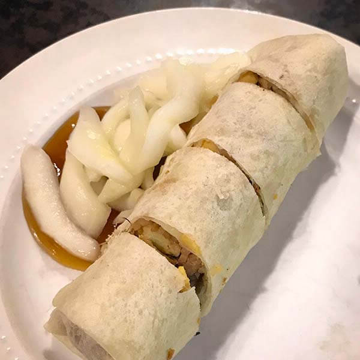
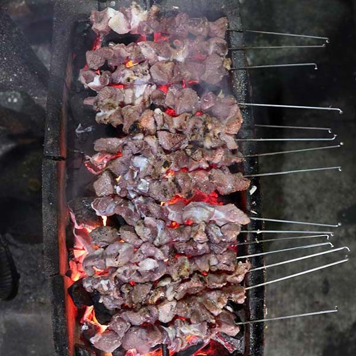

MUDIK SERU DENGAN PETUALANGAN BARU

Pulang ke kampung halaman merupakan momen yang dinanti banyak orang saat merayakan libur Lebaran. Kegiatan mudik tersebut tentu akan semakin seru apabila dirangkai dengan petualangan baru.
Itulah yang melatarbelakangi tim Kompas Eksplor bekerja sama dengan Chevrolet melakukan perjalanan merapah pulau Jawa bagian tengah hingga Madura untuk mengeksplorasi destinasi wisata sekaligus menjajal ketangguhan The New Chevrolet Trailblazer.
Sebuah pagi yang cerah mengawali perjalanan tim Eksplor merapah pulau Jawa bagian tengah hingga Madura. Ruas Tol Cikopo-Palimanan pun menjadi jalur ideal menuju ibu kota Jawa Tengah, Semarang.
Namun, belum sampai di ruas tol tersebut, tim harus merasakan kemacetan panjang di Tol Jakarta-Cikampek. Untungnya, mobil yang digunakan memiliki sederet fitur yang mampu menjaga kenyamanan berkendara. Salah satunya layar sentuh 8 inci yang dapat dihubungkan dengan ponsel pintar untuk memutar musik dan mendengarkan lagu-lagu favorit.
Tersematnya 7 speaker premium yang dilengkapi dengan subwoofer membuat tim merasa amat terhibur berada di tengah kemacetan panjang. Terlebih electronic power steering yang mampu menyesuaikan beban setir sesuai kecepatan kendaraan. Alhasil, saat berada di kemacetan, kemudi menjadi lebih ringan sehingga anggota tim Eksplor yang mengemudikan kendaraan tidak mudah lelah.
MASJID AGUNG JAWA TENGAH
Setelah melakukan perjalanan panjang, tibalah di Semarang. Di ibu kota Jawa Tengah tersebut, tim akan mencicipi berbagai keunikan, mulai dari tempat wisata hingga kuliner. Masjid Agung Jawa Tengah yang berada tidak jauh dari pusat kota menjadi obyek pertama yang disambangi tim.
Masjid ini memiliki gaya arsitektur perpaduan antara Jawa dan Arab. Selain tempat ibadah, masjid ini juga menjadi obyek wisata religi bagi wisatawan domestik maupun mancanegara. Menara Al Husna dengan ketinggian 99 meter dan pilar-pilar pada serambi masjid menjadi magnet tersendiri bagi orang yang bertandang ke tempat ini.
Wisata kuliner mencicipi makanan khas Semarang pun dilakoni sebelum tim beristirahat. Sebuah restoran lumpia di Jalan Pemuda disambangi untuk mencicipi makanan berbahan dasar rebung yang dicampur dengan irisan ayam dan udang.
Keesokan harinya, pagi-pagi benar, tim melanjutkan perjalanan menuju Brown Canyon dengan waktu tempuh sekitar 30 menit dari penginapan di pusat kota. Kawasan perbukitan tersebut merupakan salah satu tempat proyek penggalian material yang kini berbentuk tebing terjal seperti obyek wisata di AS, Grand Canyon.
- 
-
LUMPIA
Lumpia yang merupakan makanan khas Semarang juga tak luput dijadikan menu wajib saat bertandang ke kota ini. Tim pun menyambangi Lumpia Mbak Lien yang berada di Jalan Pemuda.
Penganan hangat berbahan dasar rebung dicampur dengan irisan ayam dan udang tersebut memberikan kenikmatan tersendiri saat mendarat di lidah.
BROWN CANYON
Brown Canyon menjadi pembuka di hari kedua pada eksplorasi kali ini. Tempat ini bukanlah merupakan tempat wisata, melainkan sebuah kawasan berbukit tempat proyek penggalian material yang kini berbentuk tebing terjal layaknya obyek wisata di AS, Grand Canyon.
Selain melihat alam sekitarnya, tim juga menjajal ketangguhan The New Chevrolet Trailblazer yang tampil gagah dengan sederet fitur. Alhasil, medan menantang dapat dilibas tanpa hambatan.
Di kawasan terbuka tersebut, tim menjajal ketangguhan The New Chevrolet Trailblazer dengan melintasi berbagai medan jalan. Kendaraan berbekal mesin 2.5 L Duramax diesel direct injection 4 silinder ini mampu menunjukkan keandalannya dengan tetap mengedepankan kenyamanan.
Ground clearance setinggi 219 milimeter berpadu apik dengan suspensi depan (independen) dan belakang (5-link with coil spring dan gas shock absorbers) membuat penumpang tetap nyaman meski jalan yang dilibas bergelombang dan penuh genangan.
SAM POO KONG
Sam Poo Kong
Obyek wisata berikutnya adalah Sam Poo Kong. Kelenteng yang menjadi salah satu obyek wisata utama Semarang ini selalu ramai pengunjung, baik pada hari-hari kerja maupun akhir pekan.
Berada di sisi barat daya Kota Semarang, bangunan yang dulu menjadi persinggahan pertama seorang pelaut China, Cheng Ho, kini menjadi tempat bersembahyang dan berziarah. Wisatawan yang ingin berkunjung diwajibkan membeli tiket masuk ataupun tiket terusan.
Setelah mengunjungi Kelenteng Sam Poo Kong, tim Eksplor kembali merajut perjalanan menuju Surabaya, Jawa Timur. Di Kota Pahlawan, wisata kuliner menjadi agenda pembuka sebelum melanjutkan ke obyek wisata berikutnya.

-
Rawon
Rawon Kalkulator yang berada di Taman Bungkul pun disambangi untuk mencicipi menu khas kota ini, rawon. Meski rumah makan ini memiliki nama Sedap Malam, orang lebih mengenalnya dengan Rawon Kalkulator lantaran sang kasir dapat menghitung dengan cepat bak sebuah kalkulator.
Potongan daging sapi yang dilengkapi kuah berwarna hitam terasa nikmat saat mendarat di lidah.
(Foto: Shutterstock)
Bukit Jaddih
Keesokan harinya perjalanan dilanjutkan menuju Bukit Jaddih, Madura dengan melewati Jembatan Suramadu. Bukit ini merupakan kawasan penambangan kapur yang begitu luas dan menawan sehingga dewasa ini namanya semakin dikenal para wisatawan.
Karena medan jalan yang amat menantang, penuh kelokan, tanjakan, dan turunan curam, akan lebih nyaman bila menggunakan kendaraan dengan ground clearance tinggi.
Lagi-lagi, keseruan kembali tercipta karena kendaraan yang digunakan mampu menaklukkan medan terjal dan berliku–penuh tanjakan curam dan tikungan tajam. Di tengah indahnya bukit kapur, tim juga merasakan kenyamanan berada di dalam kabin SUV berpenggerak roda belakang tersebut.
Saat di tanjakan curam, tim merasa nyaman karena mobil ini dilengkapi dengan fitur hill start assist (HSA) sehingga tak perlu khawatir kendaraan merosot ketika rem dilepas beberapa detik. Usai menjelajah beberapa area di bukit tersebut, turunan curam pun tak dapat dihindari. Namun, dengan hadirnya hill descent control, kendaraan dapat mengerem secara otomatis meski pedal rem tidak diinjak. Kedua fitur tersebut amat penting dalam meningkatkan keselamatan berkendara, terlebih melintas beragam medan jalan.
Parangkusumo
Setelah menikmati bukit kapur di Madura, sekaligus menjajal fitur yang ada di The New Chevrolet Trailblazer, perjalanan dilanjutkan menuju Pantai Parangkusumo di Yogyakarta, Jawa Tengah.
Menjelang senja, tibalah tim Eksplor di Pantai Parangkusumo untuk menikmati desiran ombak dan embusan angin pantai yang menyapa sekujur tubuh. Meski bukan hari libur, pantai di pesisir selatan Pulau Jawa ini tetap ramai.
Setelah menikmati suasana pantai sekaligus melakukan pengambilan gambar dari sosok The New Chevrolet Trailblazer, tim segera bergegas melanjutkan wisata kuliner menuju rumah makan sate klathak Pak Pong yang berada di kawasan Bantul.
- 
-
Sate Klathak Pak Pong
Sate daging kambing muda ini disajikan dengan unik karena ditusuk menggunakan jeruji besi, berbeda dengan sate pada umumnya yang menggunakan tusuk bambu. Satu porsi terdiri atas 2 tusuk dan disajian dengan kuah gulai.
Kombinasi keduanya menciptakan sensasi luar biasa bagi indera pengecap. Sate lezat ini menjadi menu penutup bagi tim sebelum keesokan harinya kembali ke Ibu Kota.
Keesokan paginya, tim kembali ke Jakarta melalui daerah Kaliurang yang dikenal dengan pemandangan alamnya yang hijau dan sejuk. Tanjakan dan kelokan ikut mewarnai perjalanan ketika melintasi kawasan tersebut.
Sama seperti ketika berangkat, Tol Cipali kembali dilalui saat tim menuju Ibu Kota. Tengah malam tim pun tiba di kawasan Jakarta Pusat. Rasa letih dan kantuk terbayar dengan petualangan seru bersama The New Chevrolet Trailblazer.
-
Copywriter
B Adi Yuwono
-
Desain grafis
Yovieta Budidarman
Arief Krestiono
-
Fotografer
Egbert Siagian
Antonius SP
-
Developer
Dimitri H